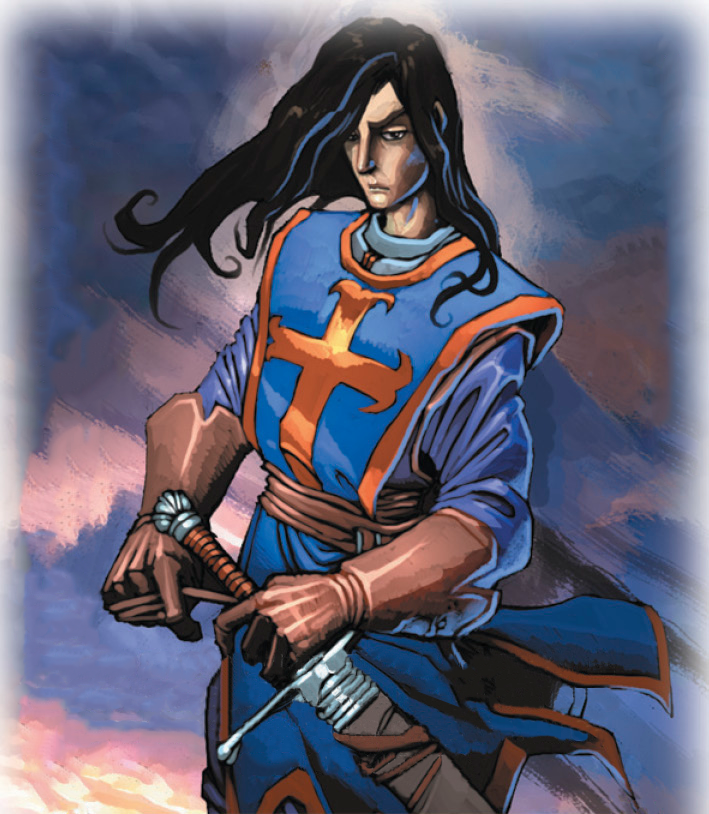

A diferencia de sus preevoluciones, se les puede encontrar más en solitario o liderando una bandada de Pidgey y Pidgeotto, siendo más territoriales con otros grandes Pokémon voladores.

Duque Godofredo es un aliado vasallo de la extensión Cruzadas del juego Mitos y Leyendas. Es un aliado que bonifica a los caballeros entregandole 1 más a la fuerza.
